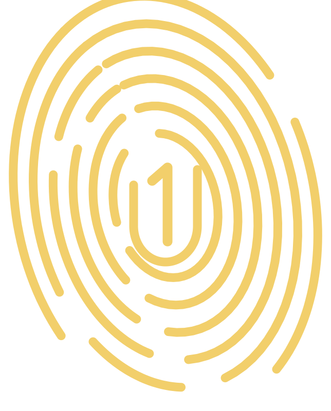
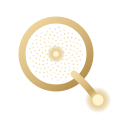

战争离世 · 估算
≈ 69,000,000所选两次世界大战记录 · 部分人群
首版收录9条战争、国家与事件记录。上方约数仅汇集一战军人逾900万与二战全球约6000万的历史估计，未重复加入国家及城市分项；不是全部战争或人类历史总数。
查看战争生命记忆与来源 →QCF致力于人类文明的共建、传承与守护。第一阶段聚焦生命科学国际合作，以可验证的研究、负责任的创新与知识共享，增强人类应对重大健康与公共卫生危机的能力。
每一个新生命，都值得被温柔迎接。
每一段生命，都值得被尊重与铭记。
所选两次世界大战记录 · 部分人群
首版收录9条战争、国家与事件记录。上方约数仅汇集一战军人逾900万与二战全球约6000万的历史估计，未重复加入国家及城市分项；不是全部战争或人类历史总数。
查看战争生命记忆与来源 →所选四次历史疫情 · 估计下限合计
首版收录10条WHO来源记录。上方数字取黑死病欧洲、1918年、1957年及1968年流感大流行四项历史估计的下限合计；不是全部疫情与疾病的历史总数。
查看疫情与疾病档案及来源 →每一个数字背后，都曾有一个名字、一个家庭，以及未竟的人生。记录失去，是为了珍惜今天；支持科学，是为了守护明天。
QCF邀请历史研究者、医疗与公共卫生工作者、档案机构，以及每一位文明共建者，共同补充有据可查的生命记录。让散落的历史被看见，让可验证的知识被传承，让每一份善意与支持，成为守护生命的行动。
参与生命记忆共建 →欢迎提供事件名称、日期、地域、人群、死亡估计及原始来源链接。资料经核验后收录；请勿提交未经授权的个人健康或身份信息。
数字口径：以上为QCF从所列来源选取的记录汇总，非来源机构发布的统一总数，亦非实时计数；两类记录之间可能重叠，不相加。核验与仓库更新：2026-11-02。
我们共享一个地球，也共同承担文明的未来。让科技服务生命，让知识代代相传，让每一份善意成为共建文明的力量。
口径：2026年人口预测；出生与离世为全年预测折算的日均约数，并非今日实时登记人数。
UN DESA · World Population Prospects 2024 · 2026 data summary

QCF致力于人类文明的共建、传承与守护。第一阶段聚焦生命科学国际合作，以可验证的研究、负责任的创新与知识共享，增强人类应对重大健康与公共卫生危机的能力。
筹备有明确疾病、人群及后续服务路径的公益研究与筛查试点。合作机构授权、伦理审查与研究方案核验后，再确定实施范围。
围绕平民保护与公共卫生应急，评估辐射损伤预防和治疗候选技术。项目处于资料核验与科学评估阶段，尚不作安全性或有效性承诺。
探索中国创新药与欧洲科研、临床及产业伙伴的合作。公益研究、患者可及性与商业转化分别设定目标、预算和权利安排。
当前阶段：筹备、合作尽调与科学评估。尚未开展本计划的临床试验、公众筛查或捐款收取。
正式系统规划：10 位文明 ID（4 位纪元前缀 + 6 位序号）：2026 创世纪元从 2026000001 起逐一签发，满 999999 后进入 2029 纪元（2029000001 起），附验证码与身份密钥，由基金会数字签名，可公开核验。
你可以为自己取一个全新的文明使者名字。原有身份可选择隐藏，对外只展示 ID 号或新名字。
让每一份经确认的文明贡献归于你的 ID，以量子小 Q 记录。免费测试期间，本机积分与正式贡献记录分开。
欢迎文明使者投稿，让知识、研究与行动成为共同的文明记忆。原创文章、科研观察与公益实践，经审核采纳后可登记为文明贡献，关联文明 ID 与量子小 Q 贡献值。
基金会正式登记前，网站功能均免费测试。正式登记后启动订阅制度，并为早期文明使者推出特别礼遇，具体资格与内容另行公布。
目前文明 ID 与小 Q 为本机测试记录；正式统一登记、投稿接收和奖励审核入口正在接入。测试不收取费用，也不会自动订阅。
参与免费测试：体验注册、签到和分享；正式贡献奖励以审核确认后的记录为准。
每日登录
分享链接（每日上限 10）
注册文明 ID
发起文明倡议
Q 是不可转让的贡献值，不是加密货币，没有货币价值，不可买卖。
生命科学为第一阶段执行重点；能源与算力、文明教育继续作为长期研究与合作方向。
支持量子计算、量子传感、量子通信、PQC与量子计量在能源研究中的可验证应用。每周发布新闻标题与内容概要，并将中英双语PDF永久归档；文明共建者 / 文明ID可解锁可信下载。
支持量子计算、量子传感与 AI 在药物发现、精准医学与健康长寿研究中的应用；以同行评审的科学为边界，不提供医疗建议，不作健康功效承诺。
以研究院与开放课程的形式起步（愿景）：记录文明、研究文明、传承文明、共建文明。学位与正式高等教育须取得相应许可。
持有文明 ID 的共建者可就任何主题发起倡议；支持者自愿捐赠；94% 的资金由共建者投票决定用途，基金会收取 6% 平台与治理服务费。
x共建者投票支出 · 基金会服务费
第一个文明 ID 2026000001 属于创始者 Jessica Sage。全球文明共建者倡议由此开始。

基金会正式登记前，所有已开放的网站功能均免费测试，不收取订阅费。正式登记后启动订阅制度；现行规划为每月 20 CHF / USD / EUR，具体服务与付款条款将在订阅前清楚展示。
One Human. One Civilization ID. One Digital Legacy. Explore a universal identity gateway and a future where digital assets, footprints and memories can be preserved, deleted or lawfully passed on by choice.
Explore NU-Key & Digital Legacy